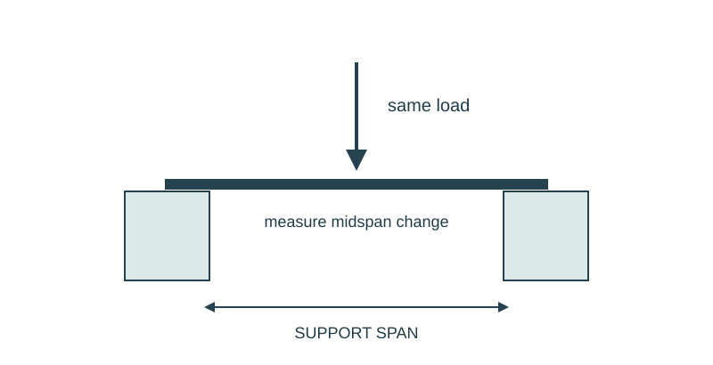

Job 13 · Fold a stronger beam
A controlled comparison of flat, folded, and revised paper beams.
110 minutes • Tape measure + pocket notebook • Name: __________________ Date: __________
Materials: Equal sheets of paper, tape, two equal book stacks, ruler/tape; a small shared set of identical erasers or other light loads.

Brief · 12 min
- Can the same amount of paper support more load just by changing shape? Predict and sketch a load path.
- Set up a dated notebook spread: sketch and readings on the left; calculation, decision, test, and revision on the right. Mark small sketches NTS unless drawn to a chosen scale.
- Work in pairs and rotate roles. Each student keeps an individual notebook and performs a tool action and a calculation.
Measure · 18 min
- Set equal-height supports 6 in apart on a desk. Use the same paper size and orientation for all beams.
- Agree on one loading position at midspan and one loading increment. Use only small loads that stay over the desk.
- Record paper, span, load type, support width, and a failure criterion: touches the desk or loses the load.
Plan · 20 min
- Design a folded beam from the same paper allowance. Dimension fold locations.
- Predict how the shape changes bending and show where the load travels into supports.
- Make a data table for shape, trial, supported count, and observed failure.
Worked example
A flat beam holds 2 identical erasers before the chosen limit; a folded beam holds 8. Compare capacity in this specific test. Capacity ratio = folded count / flat count. 8/2 = 4 times the count under the same test conditions. This is not a force in newtons without measuring load mass or force.
Make · 28 min
- Test flat and folded versions using equal span and centered loading; use fresh matching specimens after permanent creases or damage.
- Repeat each condition three times where materials permit.
- Revise one fold feature and repeat the same test; keep other variables fixed.
Test · 20 min
- Data identifies counts, trials, and the failure criterion.
- Comparison holds paper amount, span, and load placement constant.
- Revision is connected to an observed bend, buckle, or connection issue.
Explain · 12 min
- Complete the individual exit below before discussing answers.
- Add the test result, revision, and notebook page reference to your response. Use the notebook as evidence rather than retyping every page.
- Save the three selected responses and submit the lesson for teacher review. Show your physical work and notebook to the teacher. Clean up and return shared supplies.
Individual exit
Two designs support 3 and 9 identical loads in the same test. Find their capacity ratio. Name two conditions that must stay the same, and one limitation of using object counts.